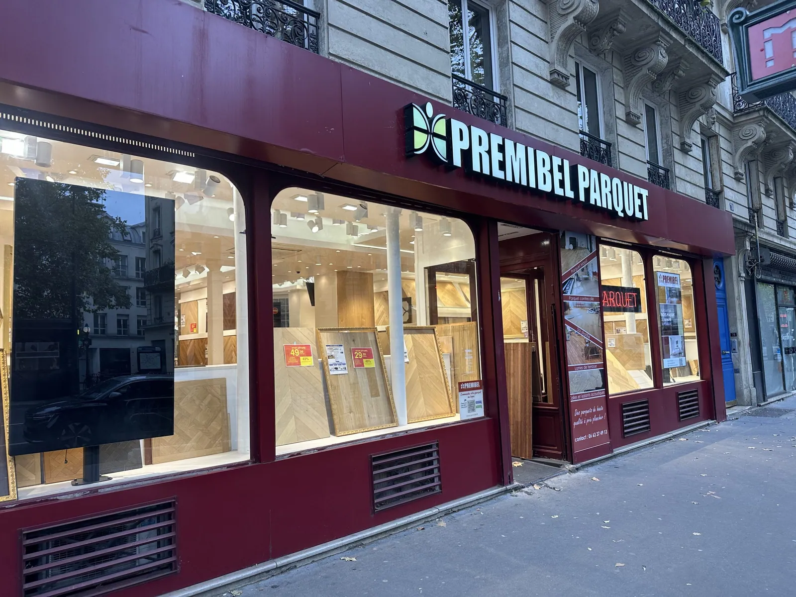
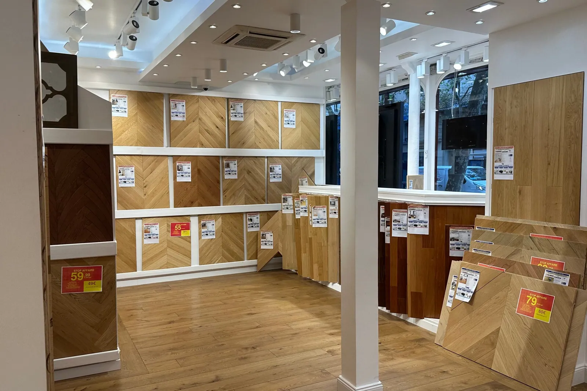

Passage TV TF1
Premibel Parquet à l’honneur.
Découvrez le passage TV consacré à Premibel Parquet. Cette vidéo présente notre expertise, notre savoir-faire dans le parquet, nos showrooms parisiens et notre accompagnement auprès des particuliers comme des professionnels.
Description de la vidéo
Une expertise acquise depuis 1992.
Dans ce reportage TV, Premibel Parquet met en avant son expertise dans le domaine du parquet, acquise depuis 1992. La vidéo présente l’univers Premibel, les conseils proposés aux clients, les gammes de parquets disponibles et l’importance d’un accompagnement professionnel pour bien choisir son revêtement de sol.
Premibel Parquet accompagne les particuliers, architectes, décorateurs, artisans et professionnels dans leurs projets de parquet massif, contrecollé, flottant, stratifié, bambou, accessoires, isolation et produits d’entretien.
- Expertise parquet depuis 1992
- Showrooms à Paris et entrepôt à Pantin
- Conseils personnalisés pour particuliers et professionnels
- Large choix de parquets et accessoires
- Commande en ligne, retrait magasin et livraison
Points clés du reportage
Cinq raisons, une même exigence.
Plus de 30 ans d’expérience au service de votre sol.
-
01
Expertise depuis 1992
Plus de 30 ans d’expérience dans le domaine du parquet.
+30 ans d’expérience
-
02
Produits de qualité
Parquets massifs, flottants, stratifiés, accessoires et entretien.

-
03
Conseils personnalisés
Accompagnement pour particuliers, artisans et professionnels.

-
04
Showrooms Premibel
Des espaces de conseil et d’exposition à Paris.

-
05
Service en ligne
Commande, devis et accompagnement disponibles sur Premibel.fr.
Demander un devis →
Transcription de la vidéo
Ce que dit le reportage.
Vidéo présentant Premibel Parquet, son histoire, son expertise, ses showrooms, ses gammes de parquets et son accompagnement client.
Présentation de Premibel Parquet
Premibel Parquet est une entreprise spécialisée dans la vente de parquets et revêtements de sol. Depuis 1992, notre équipe accompagne les clients dans le choix de produits adaptés à leurs projets.
Une expertise reconnue
Grâce à plus de 30 ans d’expérience, Premibel propose des conseils personnalisés pour choisir un parquet massif, contrecollé, flottant, stratifié ou un revêtement adapté aux contraintes du lieu.
Des produits pour tous les projets
Les clients peuvent découvrir une large sélection de parquets, accessoires, solutions d’isolation et produits d’entretien pour réussir leur projet de rénovation ou d’aménagement.
Showrooms et accompagnement
Premibel accueille ses clients dans ses showrooms parisiens et propose également un service en ligne pour commander, demander un devis ou obtenir des conseils à distance.
Une entreprise de confiance
Particuliers et professionnels font confiance à Premibel Parquet pour la qualité des produits, la disponibilité des équipes et l’accompagnement avant, pendant et après l’achat.
Votre avis compte